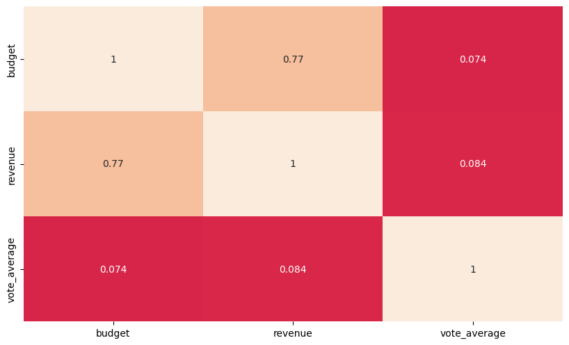
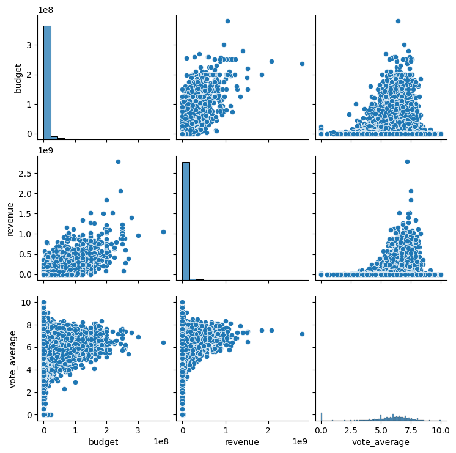
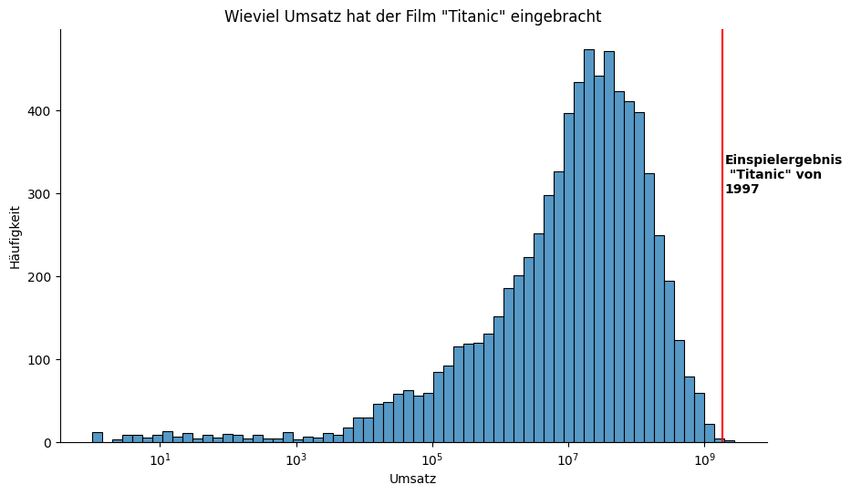

Analyse¶
[4]:
import ast
import json
[53]:
import os
from datetime import datetime
import pandas as pd
import numpy as np
import sqlite3
%matplotlib inline
import seaborn as sns
import matplotlib.pyplot as plt
import matplotlib.dates as mdates
import matplotlib.cbook as cbook
from pandas_profiling import ProfileReport
import statsmodels.formula.api as smf
plt.rc("axes.spines", top=False, right=False)
plt.rcParams['figure.figsize'] = [10, 6]
plt.rcParams['figure.dpi'] = 100
import matplotlib.font_manager
[6]:
#sklearn Befehle
from sklearn.linear_model import LinearRegression
from sklearn.model_selection import train_test_split
from sklearn.preprocessing import OrdinalEncoder, OneHotEncoder
from sklearn.pipeline import Pipeline
from sklearn.compose import ColumnTransformer
from sklearn.preprocessing import StandardScaler, Normalizer, FunctionTransformer, PolynomialFeatures
from sklearn.impute import SimpleImputer
from sklearn.model_selection import cross_val_score
from sklearn.metrics import r2_score
from six import StringIO
from IPython.display import Image
from pydot import graph_from_dot_data
Laden aus DWH¶
[7]:
SQLITE_FILE_PATH = os.path.join('..', "output", "dwh.sqlite3")
PROFILE_PATH = os.path.join('..','output', 'movies_report.html')
[8]:
SQLITE_FILE_PATH
[8]:
'..\\output\\dwh.sqlite3'
[9]:
connection = sqlite3.connect(SQLITE_FILE_PATH)
[10]:
genres = pd.read_sql_query("SELECT * from genres;", connection)
genres
[10]:
| genre_id | genre_name | |
|---|---|---|
| 0 | 16 | Animation |
| 1 | 35 | Comedy |
| 2 | 10751 | Family |
| 3 | 12 | Adventure |
| 4 | 14 | Fantasy |
| 5 | 10749 | Romance |
| 6 | 18 | Drama |
| 7 | 28 | Action |
| 8 | 80 | Crime |
| 9 | 53 | Thriller |
| 10 | 27 | Horror |
| 11 | 36 | History |
| 12 | 878 | Science Fiction |
| 13 | 9648 | Mystery |
| 14 | 10752 | War |
| 15 | 10769 | Foreign |
| 16 | 10402 | Music |
| 17 | 99 | Documentary |
| 18 | 37 | Western |
| 19 | 10770 | TV Movie |
[11]:
movies = pd.read_sql_query("SELECT * from movies;", connection)
movies.head()
[11]:
| adult | budget | homepage | id | imdb_id | original_language | original_title | overview | popularity | poster_path | release_date | revenue | runtime | status | tagline | title | video | vote_average | vote_count | |
|---|---|---|---|---|---|---|---|---|---|---|---|---|---|---|---|---|---|---|---|
| 0 | False | 30000000 | http://toystory.disney.com/toy-story | 862 | tt0114709 | en | Toy Story | Led by Woody, Andy's toys live happily in his ... | 21.946943 | /rhIRbceoE9lR4veEXuwCC2wARtG.jpg | 1995-10-30 | 373554033.0 | 81.0 | Released | None | Toy Story | 0.0 | 7.7 | 5415.0 |
| 1 | False | 65000000 | None | 8844 | tt0113497 | en | Jumanji | When siblings Judy and Peter discover an encha... | 17.015539 | /vzmL6fP7aPKNKPRTFnZmiUfciyV.jpg | 1995-12-15 | 262797249.0 | 104.0 | Released | Roll the dice and unleash the excitement! | Jumanji | 0.0 | 6.9 | 2413.0 |
| 2 | False | 0 | None | 15602 | tt0113228 | en | Grumpier Old Men | A family wedding reignites the ancient feud be... | 11.712900 | /6ksm1sjKMFLbO7UY2i6G1ju9SML.jpg | 1995-12-22 | 0.0 | 101.0 | Released | Still Yelling. Still Fighting. Still Ready for... | Grumpier Old Men | 0.0 | 6.5 | 92.0 |
| 3 | False | 16000000 | None | 31357 | tt0114885 | en | Waiting to Exhale | Cheated on, mistreated and stepped on, the wom... | 3.859495 | /16XOMpEaLWkrcPqSQqhTmeJuqQl.jpg | 1995-12-22 | 81452156.0 | 127.0 | Released | Friends are the people who let you be yourself... | Waiting to Exhale | 0.0 | 6.1 | 34.0 |
| 4 | False | 0 | None | 11862 | tt0113041 | en | Father of the Bride Part II | Just when George Banks has recovered from his ... | 8.387519 | /e64sOI48hQXyru7naBFyssKFxVd.jpg | 1995-02-10 | 76578911.0 | 106.0 | Released | Just When His World Is Back To Normal... He's ... | Father of the Bride Part II | 0.0 | 5.7 | 173.0 |
[12]:
movies_genre = pd.read_sql_query("SELECT * from movies_genre;", connection)
movies_genre.head()
[12]:
| movie_id | genre_id | |
|---|---|---|
| 0 | 862 | 16 |
| 1 | 862 | 35 |
| 2 | 862 | 10751 |
| 3 | 8844 | 12 |
| 4 | 8844 | 14 |
Erster Überblick¶
[13]:
profile = movies.profile_report(title="Pandas Profiling Report", minimal=True)
profile.to_file(PROFILE_PATH)
[ ]:
Spalten in SQL - Durchschnittliche Bewertung pro Genre¶
[14]:
query = """
SELECT AVG(movies.vote_average) AS vote_avg, genres.genre_name FROM genres
JOIN movies_genre ON genres.genre_id = movies_genre.genre_id
JOIN movies ON movies.id = movies_genre.movie_id
GROUP BY genres.genre_name
ORDER BY vote_avg DESC
"""
avg_votes_df = pd.read_sql_query(query, con=connection)
avg_votes_df
[14]:
| vote_avg | genre_name | |
|---|---|---|
| 0 | 6.274459 | Animation |
| 1 | 6.154220 | History |
| 2 | 6.041358 | War |
| 3 | 5.903890 | Drama |
| 4 | 5.879921 | Crime |
| 5 | 5.878500 | Music |
| 6 | 5.823222 | Documentary |
| 7 | 5.823071 | Mystery |
| 8 | 5.800815 | Romance |
| 9 | 5.781646 | Fantasy |
| 10 | 5.752918 | Family |
| 11 | 5.742629 | Foreign |
| 12 | 5.715939 | Comedy |
| 13 | 5.683039 | Adventure |
| 14 | 5.618232 | Thriller |
| 15 | 5.582642 | Action |
| 16 | 5.339810 | Science Fiction |
| 17 | 5.235677 | TV Movie |
| 18 | 5.230197 | Horror |
| 19 | 5.167179 | Western |
Was nimmt ein Film ein¶
Algorithmen: - statsmodels - Regression in Scikit-learn
Zielvariable: - revenue
Input: - budget - runtime - votre_average
Blick in die Daten¶
[18]:
movies["status"].unique()
[18]:
array(['Released', None, 'Rumored', 'Post Production', 'In Production',
'Planned', 'Canceled'], dtype=object)
[62]:
df = movies[["original_title", "budget","status","revenue", "vote_average", "runtime", "original_language"]]
df.loc[df["status"] == "Released"]
[62]:
| original_title | budget | status | revenue | vote_average | runtime | original_language | |
|---|---|---|---|---|---|---|---|
| 0 | Toy Story | 30000000 | Released | 373554033.0 | 7.7 | 81.0 | en |
| 1 | Jumanji | 65000000 | Released | 262797249.0 | 6.9 | 104.0 | en |
| 2 | Grumpier Old Men | 0 | Released | 0.0 | 6.5 | 101.0 | en |
| 3 | Waiting to Exhale | 16000000 | Released | 81452156.0 | 6.1 | 127.0 | en |
| 4 | Father of the Bride Part II | 0 | Released | 76578911.0 | 5.7 | 106.0 | en |
| ... | ... | ... | ... | ... | ... | ... | ... |
| 45458 | رگ خواب | 0 | Released | 0.0 | 4.0 | 90.0 | fa |
| 45459 | Siglo ng Pagluluwal | 0 | Released | 0.0 | 9.0 | 360.0 | tl |
| 45460 | Betrayal | 0 | Released | 0.0 | 3.8 | 90.0 | en |
| 45461 | Satana likuyushchiy | 0 | Released | 0.0 | 0.0 | 87.0 | en |
| 45462 | Queerama | 0 | Released | 0.0 | 0.0 | 75.0 | en |
45014 rows × 7 columns
[63]:
df.loc[df["runtime"] == 0 ]
[63]:
| original_title | budget | status | revenue | vote_average | runtime | original_language | |
|---|---|---|---|---|---|---|---|
| 222 | Dream Man | 0 | Released | 0.0 | 2.5 | 0.0 | en |
| 224 | Destiny Turns on the Radio | 0 | Released | 0.0 | 5.3 | 0.0 | it |
| 398 | Dos Crímenes | 0 | Released | 0.0 | 5.0 | 0.0 | en |
| 554 | The Beans of Egypt, Maine | 0 | Released | 0.0 | 0.0 | 0.0 | en |
| 667 | The Run of the Country | 0 | Released | 0.0 | 8.0 | 0.0 | en |
| ... | ... | ... | ... | ... | ... | ... | ... |
| 45367 | Cómo funcionan casi todas las cosas | 0 | Released | 0.0 | 6.8 | 0.0 | es |
| 45368 | LEGO DC Super Hero Girls: Brain Drain | 0 | Released | 0.0 | 10.0 | 0.0 | en |
| 45396 | Все и сразу | 750000 | Released | 3.0 | 6.0 | 0.0 | ru |
| 45413 | Rigadin peintre cubiste | 0 | Released | 0.0 | 0.0 | 0.0 | en |
| 45427 | Starquest II | 0 | Released | 0.0 | 2.0 | 0.0 | en |
1558 rows × 7 columns
Macht es Sinn den Status als Variable zu benutzen, da ein nicht releater Film noch kein Einspielergebnis (“revenue”) hat?
[64]:
df.info()
<class 'pandas.core.frame.DataFrame'>
RangeIndex: 45463 entries, 0 to 45462
Data columns (total 7 columns):
# Column Non-Null Count Dtype
--- ------ -------------- -----
0 original_title 45463 non-null object
1 budget 45463 non-null int64
2 status 45379 non-null object
3 revenue 45460 non-null float64
4 vote_average 45460 non-null float64
5 runtime 45203 non-null float64
6 original_language 45452 non-null object
dtypes: float64(3), int64(1), object(3)
memory usage: 2.4+ MB
[33]:
# wir löschen alle nicht auf dem Status released
[65]:
df = movies[["original_title", "budget","revenue", "vote_average", "original_language"]].loc[movies["status"] == "Released"]
df.head()
[65]:
| original_title | budget | revenue | vote_average | original_language | |
|---|---|---|---|---|---|
| 0 | Toy Story | 30000000 | 373554033.0 | 7.7 | en |
| 1 | Jumanji | 65000000 | 262797249.0 | 6.9 | en |
| 2 | Grumpier Old Men | 0 | 0.0 | 6.5 | en |
| 3 | Waiting to Exhale | 16000000 | 81452156.0 | 6.1 | en |
| 4 | Father of the Bride Part II | 0 | 76578911.0 | 5.7 | en |
Statsmodels Vorhersage¶
[66]:
sns.heatmap(df.corr(),cbar=False, vmin=-1, vmax=1, cmap="rocket", annot=True)
[66]:
<AxesSubplot:>

[49]:
# Revenue und budget korrellieren ziemlich stark
[50]:
sns.pairplot(df)
[50]:
<seaborn.axisgrid.PairGrid at 0x183ed53b4f0>

[58]:
# Revenue mit Budget vorhersagen
model = smf.ols(formula="revenue ~ budget", data=df)
results = model.fit()
print(results.summary())
OLS Regression Results
==============================================================================
Dep. Variable: revenue R-squared: 0.591
Model: OLS Adj. R-squared: 0.591
Method: Least Squares F-statistic: 6.502e+04
Date: Sat, 26 Feb 2022 Prob (F-statistic): 0.00
Time: 12:14:35 Log-Likelihood: -8.5330e+05
No. Observations: 45014 AIC: 1.707e+06
Df Residuals: 45012 BIC: 1.707e+06
Df Model: 1
Covariance Type: nonrobust
==============================================================================
coef std err t P>|t| [0.025 0.975]
------------------------------------------------------------------------------
Intercept -7.879e+05 2.01e+05 -3.928 0.000 -1.18e+06 -3.95e+05
budget 2.8385 0.011 254.993 0.000 2.817 2.860
==============================================================================
Omnibus: 72496.455 Durbin-Watson: 1.957
Prob(Omnibus): 0.000 Jarque-Bera (JB): 181228428.701
Skew: 10.047 Prob(JB): 0.00
Kurtosis: 313.196 Cond. No. 1.85e+07
==============================================================================
Notes:
[1] Standard Errors assume that the covariance matrix of the errors is correctly specified.
[2] The condition number is large, 1.85e+07. This might indicate that there are
strong multicollinearity or other numerical problems.
[97]:
# revenue mit
model2 = smf.ols(formula="revenue ~ budget + vote_average", data=df)
results2 = model2.fit()
print(results2.summary())
OLS Regression Results
==============================================================================
Dep. Variable: revenue R-squared: 0.592
Model: OLS Adj. R-squared: 0.592
Method: Least Squares F-statistic: 3.261e+04
Date: Sat, 26 Feb 2022 Prob (F-statistic): 0.00
Time: 14:31:38 Log-Likelihood: -8.5326e+05
No. Observations: 45014 AIC: 1.707e+06
Df Residuals: 45011 BIC: 1.707e+06
Df Model: 2
Covariance Type: nonrobust
================================================================================
coef std err t P>|t| [0.025 0.975]
--------------------------------------------------------------------------------
Intercept -6.013e+06 6.04e+05 -9.960 0.000 -7.2e+06 -4.83e+06
budget 2.8310 0.011 253.860 0.000 2.809 2.853
vote_average 9.349e+05 1.02e+05 9.176 0.000 7.35e+05 1.13e+06
==============================================================================
Omnibus: 72537.859 Durbin-Watson: 1.958
Prob(Omnibus): 0.000 Jarque-Bera (JB): 182126487.472
Skew: 10.058 Prob(JB): 0.00
Kurtosis: 313.965 Cond. No. 5.66e+07
==============================================================================
Notes:
[1] Standard Errors assume that the covariance matrix of the errors is correctly specified.
[2] The condition number is large, 5.66e+07. This might indicate that there are
strong multicollinearity or other numerical problems.
[166]:
text_file = open(os.path.join("..","media", "OLS_summary1.rst"),"w")
text_file.write(results2.summary().as_text())
text_file.close()
[68]:
# revenue mit mit categorialer Variable der original Language zum Budget und vate_average
model2 = smf.ols(formula="revenue ~ budget + vote_average + C(original_language)", data=df)
results2 = model2.fit()
print(results2.summary())
OLS Regression Results
==============================================================================
Dep. Variable: revenue R-squared: 0.592
Model: OLS Adj. R-squared: 0.591
Method: Least Squares F-statistic: 723.4
Date: Sat, 26 Feb 2022 Prob (F-statistic): 0.00
Time: 12:19:27 Log-Likelihood: -8.5307e+05
No. Observations: 45004 AIC: 1.706e+06
Df Residuals: 44913 BIC: 1.707e+06
Df Model: 90
Covariance Type: nonrobust
==============================================================================================
coef std err t P>|t| [0.025 0.975]
----------------------------------------------------------------------------------------------
Intercept -4.8e+06 1.31e+07 -0.367 0.714 -3.04e+07 2.08e+07
C(original_language)[T.af] -4.559e+05 3.2e+07 -0.014 0.989 -6.32e+07 6.23e+07
C(original_language)[T.am] -2.352e+06 3.2e+07 -0.073 0.941 -6.51e+07 6.04e+07
C(original_language)[T.ar] -1.963e+06 1.47e+07 -0.134 0.894 -3.08e+07 2.68e+07
C(original_language)[T.ay] -9.6e+05 4.34e+07 -0.022 0.982 -8.6e+07 8.4e+07
C(original_language)[T.bg] -1.301e+06 1.85e+07 -0.070 0.944 -3.75e+07 3.49e+07
C(original_language)[T.bm] -2.994e+06 2.72e+07 -0.110 0.912 -5.63e+07 5.04e+07
C(original_language)[T.bn] -2.028e+06 1.52e+07 -0.134 0.894 -3.17e+07 2.77e+07
C(original_language)[T.bo] -2.994e+06 3.2e+07 -0.093 0.926 -6.58e+07 5.98e+07
C(original_language)[T.bs] -3.901e+05 1.74e+07 -0.022 0.982 -3.45e+07 3.37e+07
C(original_language)[T.ca] -7.386e+06 1.77e+07 -0.417 0.677 -4.21e+07 2.73e+07
C(original_language)[T.cn] -2.822e+06 1.33e+07 -0.212 0.832 -2.89e+07 2.32e+07
C(original_language)[T.cs] -1.226e+06 1.36e+07 -0.090 0.928 -2.78e+07 2.54e+07
C(original_language)[T.cy] -1.44e+06 4.34e+07 -0.033 0.974 -8.64e+07 8.36e+07
C(original_language)[T.da] -2.193e+06 1.34e+07 -0.164 0.870 -2.84e+07 2.4e+07
C(original_language)[T.de] -1.641e+06 1.31e+07 -0.125 0.901 -2.74e+07 2.41e+07
C(original_language)[T.el] -1.244e+06 1.36e+07 -0.091 0.927 -2.8e+07 2.55e+07
C(original_language)[T.en] -1.181e+06 1.31e+07 -0.090 0.928 -2.68e+07 2.45e+07
C(original_language)[T.eo] 6.72e+05 4.34e+07 0.015 0.988 -8.43e+07 8.57e+07
C(original_language)[T.es] -1.334e+06 1.31e+07 -0.102 0.919 -2.71e+07 2.44e+07
C(original_language)[T.et] -8.831e+05 1.56e+07 -0.057 0.955 -3.14e+07 2.96e+07
C(original_language)[T.eu] 1.056e+06 2.72e+07 0.039 0.969 -5.23e+07 5.44e+07
C(original_language)[T.fa] -1.146e+06 1.37e+07 -0.083 0.933 -2.8e+07 2.58e+07
C(original_language)[T.fi] -1.052e+06 1.33e+07 -0.079 0.937 -2.71e+07 2.5e+07
C(original_language)[T.fr] -3.008e+06 1.31e+07 -0.230 0.818 -2.87e+07 2.27e+07
C(original_language)[T.fy] 4.8e+06 4.34e+07 0.111 0.912 -8.02e+07 8.98e+07
C(original_language)[T.gl] -1.824e+06 4.34e+07 -0.042 0.966 -8.68e+07 8.32e+07
C(original_language)[T.he] -1.487e+06 1.4e+07 -0.106 0.916 -2.9e+07 2.6e+07
C(original_language)[T.hi] -6.913e+05 1.32e+07 -0.052 0.958 -2.66e+07 2.52e+07
C(original_language)[T.hr] -6.489e+05 1.52e+07 -0.043 0.966 -3.04e+07 2.91e+07
C(original_language)[T.hu] -1.128e+06 1.37e+07 -0.082 0.935 -2.8e+07 2.58e+07
C(original_language)[T.hy] 0.0866 4.34e+07 2e-09 1.000 -8.5e+07 8.5e+07
C(original_language)[T.id] -2.384e+06 1.6e+07 -0.149 0.882 -3.38e+07 2.9e+07
C(original_language)[T.is] -1.718e+06 1.57e+07 -0.110 0.913 -3.24e+07 2.9e+07
C(original_language)[T.it] -8.252e+05 1.31e+07 -0.063 0.950 -2.65e+07 2.49e+07
C(original_language)[T.iu] -1.584e+06 3.2e+07 -0.049 0.961 -6.44e+07 6.12e+07
C(original_language)[T.ja] -4.902e+05 1.31e+07 -0.037 0.970 -2.62e+07 2.52e+07
C(original_language)[T.jv] 0.0866 4.34e+07 2e-09 1.000 -8.5e+07 8.5e+07
C(original_language)[T.ka] -7.721e+05 1.63e+07 -0.047 0.962 -3.27e+07 3.12e+07
C(original_language)[T.kk] -4.16e+05 2.72e+07 -0.015 0.988 -5.38e+07 5.29e+07
C(original_language)[T.kn] -1.906e+06 2.72e+07 -0.070 0.944 -5.53e+07 5.14e+07
C(original_language)[T.ko] -2.027e+06 1.32e+07 -0.153 0.878 -2.79e+07 2.39e+07
C(original_language)[T.ku] -3.422e+06 2.72e+07 -0.126 0.900 -5.68e+07 4.99e+07
C(original_language)[T.ky] 1.824e+06 2.72e+07 0.067 0.947 -5.15e+07 5.52e+07
C(original_language)[T.la] -3.007e+06 4.34e+07 -0.069 0.945 -8.8e+07 8.2e+07
C(original_language)[T.lb] 4.8e+06 4.34e+07 0.111 0.912 -8.02e+07 8.98e+07
C(original_language)[T.lo] -3.652e+06 3.2e+07 -0.114 0.909 -6.64e+07 5.91e+07
C(original_language)[T.lt] -6.934e+05 1.9e+07 -0.036 0.971 -3.79e+07 3.65e+07
C(original_language)[T.lv] 1.801e+05 1.63e+07 0.011 0.991 -3.18e+07 3.21e+07
C(original_language)[T.mk] -1.978e+06 2.26e+07 -0.087 0.930 -4.64e+07 4.24e+07
C(original_language)[T.ml] -1.885e+06 1.48e+07 -0.128 0.899 -3.09e+07 2.71e+07
C(original_language)[T.mn] -2.448e+06 3.2e+07 -0.076 0.939 -6.52e+07 6.03e+07
C(original_language)[T.mr] -5.314e+05 1.55e+07 -0.034 0.973 -3.09e+07 2.98e+07
C(original_language)[T.ms] 1.21e+06 2.26e+07 0.053 0.957 -4.32e+07 4.56e+07
C(original_language)[T.mt] 4.8e+06 4.34e+07 0.111 0.912 -8.02e+07 8.98e+07
C(original_language)[T.nb] -2.969e+06 2.14e+07 -0.139 0.889 -4.48e+07 3.89e+07
C(original_language)[T.ne] -1.008e+06 3.2e+07 -0.031 0.975 -6.38e+07 6.18e+07
C(original_language)[T.nl] -1.27e+06 1.33e+07 -0.095 0.924 -2.74e+07 2.49e+07
C(original_language)[T.no] -3.09e+06 1.37e+07 -0.226 0.821 -2.99e+07 2.37e+07
C(original_language)[T.pa] -2.256e+06 3.2e+07 -0.070 0.944 -6.5e+07 6.05e+07
C(original_language)[T.pl] -1.611e+06 1.34e+07 -0.120 0.904 -2.78e+07 2.46e+07
C(original_language)[T.ps] -1.169e+06 3.2e+07 -0.037 0.971 -6.39e+07 6.16e+07
C(original_language)[T.pt] -1.547e+06 1.33e+07 -0.117 0.907 -2.76e+07 2.45e+07
C(original_language)[T.qu] 0.0867 4.34e+07 2e-09 1.000 -8.5e+07 8.5e+07
C(original_language)[T.ro] -1.767e+06 1.42e+07 -0.125 0.901 -2.96e+07 2.6e+07
C(original_language)[T.ru] -3.004e+06 1.32e+07 -0.228 0.819 -2.88e+07 2.28e+07
C(original_language)[T.rw] -1.632e+06 4.34e+07 -0.038 0.970 -8.66e+07 8.34e+07
C(original_language)[T.sh] -5.76e+05 2.26e+07 -0.025 0.980 -4.5e+07 4.38e+07
C(original_language)[T.si] 1.536e+06 4.34e+07 0.035 0.972 -8.35e+07 8.65e+07
C(original_language)[T.sk] -1.301e+06 1.9e+07 -0.069 0.945 -3.85e+07 3.59e+07
C(original_language)[T.sl] -1.716e+06 1.67e+07 -0.103 0.918 -3.44e+07 3.1e+07
C(original_language)[T.sm] -1.632e+06 4.34e+07 -0.038 0.970 -8.66e+07 8.34e+07
C(original_language)[T.sq] -3.206e+06 2.26e+07 -0.142 0.887 -4.76e+07 4.12e+07
C(original_language)[T.sr] -3.704e+06 1.41e+07 -0.263 0.792 -3.13e+07 2.39e+07
C(original_language)[T.sv] -1.507e+06 1.32e+07 -0.114 0.909 -2.75e+07 2.45e+07
C(original_language)[T.ta] -1.514e+06 1.39e+07 -0.109 0.913 -2.87e+07 2.57e+07
C(original_language)[T.te] 2.73e+06 1.45e+07 0.189 0.850 -2.56e+07 3.11e+07
C(original_language)[T.tg] -1.248e+06 4.34e+07 -0.029 0.977 -8.62e+07 8.37e+07
C(original_language)[T.th] -1.581e+06 1.39e+07 -0.114 0.910 -2.89e+07 2.57e+07
C(original_language)[T.tl] -1.615e+06 1.58e+07 -0.102 0.918 -3.25e+07 2.93e+07
C(original_language)[T.tr] -7.134e+05 1.35e+07 -0.053 0.958 -2.72e+07 2.58e+07
C(original_language)[T.uk] -1.581e+06 1.67e+07 -0.095 0.924 -3.43e+07 3.11e+07
C(original_language)[T.ur] -1.416e+06 1.96e+07 -0.072 0.942 -3.99e+07 3.7e+07
C(original_language)[T.uz] 4.8e+06 4.34e+07 0.111 0.912 -8.02e+07 8.98e+07
C(original_language)[T.vi] -1.573e+06 1.85e+07 -0.085 0.932 -3.78e+07 3.47e+07
C(original_language)[T.wo] -1.459e+06 2.26e+07 -0.064 0.949 -4.58e+07 4.29e+07
C(original_language)[T.xx] -9.064e+05 1.5e+07 -0.061 0.952 -3.03e+07 2.85e+07
C(original_language)[T.zh] -3.409e+06 1.32e+07 -0.258 0.797 -2.94e+07 2.25e+07
C(original_language)[T.zu] -3.168e+06 4.34e+07 -0.073 0.942 -8.82e+07 8.18e+07
budget 2.8292 0.011 251.132 0.000 2.807 2.851
vote_average 9.6e+05 1.03e+05 9.295 0.000 7.58e+05 1.16e+06
==============================================================================
Omnibus: 72532.814 Durbin-Watson: 1.958
Prob(Omnibus): 0.000 Jarque-Bera (JB): 182234799.934
Skew: 10.061 Prob(JB): 0.00
Kurtosis: 314.092 Cond. No. 1.16e+10
==============================================================================
Notes:
[1] Standard Errors assume that the covariance matrix of the errors is correctly specified.
[2] The condition number is large, 1.16e+10. This might indicate that there are
strong multicollinearity or other numerical problems.
scikit-learn Regression¶
[69]:
df.info()
<class 'pandas.core.frame.DataFrame'>
Int64Index: 45014 entries, 0 to 45462
Data columns (total 5 columns):
# Column Non-Null Count Dtype
--- ------ -------------- -----
0 original_title 45014 non-null object
1 budget 45014 non-null int64
2 revenue 45014 non-null float64
3 vote_average 45014 non-null float64
4 original_language 45004 non-null object
dtypes: float64(2), int64(1), object(2)
memory usage: 2.1+ MB
[70]:
num_cols = ["budget","vote_average"]
cat_cols = ["original_language"]
target = ["revenue"]
[75]:
y= df["revenue"]
y.head()
[75]:
0 373554033.0
1 262797249.0
2 0.0
3 81452156.0
4 76578911.0
Name: revenue, dtype: float64
[71]:
num_pipeline = Pipeline([
("std_scaler", StandardScaler()),
])
[72]:
full_pipeline = ColumnTransformer([
("num", num_pipeline, num_cols),
("cat", OneHotEncoder(), cat_cols),
])
[73]:
df1 = full_pipeline.fit_transform(df)
df1.shape
[73]:
(45014, 92)
[76]:
reg = LinearRegression().fit(df1,y )
[77]:
reg.score(df1, y)
[77]:
0.5917765635881711
Revenue als Histogramm und exportieren¶
[100]:
movies.head()
[100]:
| adult | budget | homepage | id | imdb_id | original_language | original_title | overview | popularity | poster_path | release_date | revenue | runtime | status | tagline | title | video | vote_average | vote_count | |
|---|---|---|---|---|---|---|---|---|---|---|---|---|---|---|---|---|---|---|---|
| 0 | False | 30000000 | http://toystory.disney.com/toy-story | 862 | tt0114709 | en | Toy Story | Led by Woody, Andy's toys live happily in his ... | 21.946943 | /rhIRbceoE9lR4veEXuwCC2wARtG.jpg | 1995-10-30 | 373554033.0 | 81.0 | Released | None | Toy Story | 0.0 | 7.7 | 5415.0 |
| 1 | False | 65000000 | None | 8844 | tt0113497 | en | Jumanji | When siblings Judy and Peter discover an encha... | 17.015539 | /vzmL6fP7aPKNKPRTFnZmiUfciyV.jpg | 1995-12-15 | 262797249.0 | 104.0 | Released | Roll the dice and unleash the excitement! | Jumanji | 0.0 | 6.9 | 2413.0 |
| 2 | False | 0 | None | 15602 | tt0113228 | en | Grumpier Old Men | A family wedding reignites the ancient feud be... | 11.712900 | /6ksm1sjKMFLbO7UY2i6G1ju9SML.jpg | 1995-12-22 | 0.0 | 101.0 | Released | Still Yelling. Still Fighting. Still Ready for... | Grumpier Old Men | 0.0 | 6.5 | 92.0 |
| 3 | False | 16000000 | None | 31357 | tt0114885 | en | Waiting to Exhale | Cheated on, mistreated and stepped on, the wom... | 3.859495 | /16XOMpEaLWkrcPqSQqhTmeJuqQl.jpg | 1995-12-22 | 81452156.0 | 127.0 | Released | Friends are the people who let you be yourself... | Waiting to Exhale | 0.0 | 6.1 | 34.0 |
| 4 | False | 0 | None | 11862 | tt0113041 | en | Father of the Bride Part II | Just when George Banks has recovered from his ... | 8.387519 | /e64sOI48hQXyru7naBFyssKFxVd.jpg | 1995-02-10 | 76578911.0 | 106.0 | Released | Just When His World Is Back To Normal... He's ... | Father of the Bride Part II | 0.0 | 5.7 | 173.0 |
[110]:
movies.loc[movies["title"] == "Titanic"]
[110]:
| adult | budget | homepage | id | imdb_id | original_language | original_title | overview | popularity | poster_path | release_date | revenue | runtime | status | tagline | title | video | vote_average | vote_count | |
|---|---|---|---|---|---|---|---|---|---|---|---|---|---|---|---|---|---|---|---|
| 1639 | False | 200000000 | http://www.titanicmovie.com | 597 | tt0120338 | en | Titanic | 84 years later, a 101-year-old woman named Ros... | 26.889070 | /kHXEpyfl6zqn8a6YuozZUujufXf.jpg | 1997-11-18 | 1.845034e+09 | 194.0 | Released | Nothing on Earth could come between them. | Titanic | 0.0 | 7.5 | 7770.0 |
| 3285 | False | 1805000 | None | 16535 | tt0046435 | en | Titanic | Unhappily married, Julia Sturges decides to go... | 12.907070 | /8DMS4zPRF3uH4BZ8OC4GtZ8ewD9.jpg | 1953-04-11 | 4.905000e+06 | 98.0 | Released | TITANIC in Emotion...in Spectacle...in Climax.... | Titanic | 0.0 | 6.2 | 27.0 |
| 25472 | False | 13000000 | None | 2699 | tt0115392 | en | Titanic | A story of the romances of two couples upon th... | 3.435807 | /AosgVsKPbLctVQ8hd8shEj7LJrZ.jpg | 1996-11-17 | 0.000000e+00 | 173.0 | Released | None | Titanic | 0.0 | 6.3 | 45.0 |
[136]:
#Revenue vom richtigen Titanic von 1997 als Wert abspeichern
rev = movies.iloc[1639]['revenue']
rev
[136]:
1845034188.0
[138]:
histo = movies.loc[movies["revenue"]> 0]
histo.shape
[138]:
(7408, 19)
[164]:
g = sns.histplot(data=histo, x="revenue", log_scale=True)
plt.axvline(rev, 0,1.0, color="red")
plt.text(rev+150000000, 300, "Einspielergebnis\n \"Titanic\" von \n1997", horizontalalignment='left', size='medium', color='black', weight='semibold')
plt.title("Wieviel Umsatz hat der Film \"Titanic\" eingebracht")
plt.xlabel("Umsatz")
plt.ylabel("Häufigkeit")
plt.savefig(os.path.join("..","media", "histo.png"))
plt.show()

[ ]: